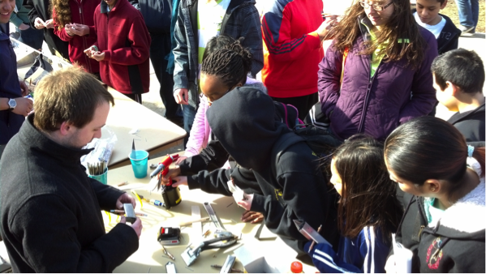

We are pleased to announce that Jon Stricker will be the next President of SAB for the Spring 2015 semester. An enthusiastic and hard-working leader, Jon previously served as the head of Project Management. Jon will be joined by Nick Hou as the new Technical Vice President for Spring 2015. Nick is the current leader of Project Management whose keen insight and experience with SAB has helped him develop some new ideas for improving the build process.
If you are interested in joining Jon and Nick on the Exec. Board, please apply for one of the available positions listed in the newsletter!
Tailwinds,
Ed Moore, VP Operations
Student Aircraft Builders
It's been a great start to the semester and there's a lot to catch up on! In order to keep the whole of SAB informed and up to date with projects and events, we will be creating bi-weekly updates. This first update will be rather lengthy and wordy, but fear not! Future updates will be much more focused on pictures and contain mainly key points and projects.
So please, write us back, find us on facebook, meet us at Joe's (6pm on Tuesdays), look at the calendar and upcoming events, and hopefully we'll see you soon.
Tailwinds,
Andy Putch, VP Operations
Student Aircraft Builders
EOH has been great. The construction team has been showing our sheet metal assembly process with a build-your-own aluminum model plane. Students get to bend sheet metal and drive rivets and if metal isn't your thing, we have balsa wod gliders. Come check out our horizontal stabilizer.
The career fair was absolutely fantastic! Not only have we had the chance to make contact with several representatives from various companies, many of our members have also secured positions for this summer and beyond.
General Electric and Rockwell Collins representatives visited the hangar following the career fair and we are hoping to develop a strong relationship with them.
Futhermore, our crowdfunding campaign has finally launched at Stemfunder. Please come to support us!
We have started to use the Active Instruction program for both Project Management and the Build Team!
Active Instructions is a computer program developed by CS students working with SAB. The program takes all the instructions written by the Project Management team along with constraints on step order, tools, materials and gathers information about the builder's current progress through a user interface. When a builder finishes a step, the program calculates the optimal next step to begin so the construction process is as efficient as possible and now, we're demoing it for the training toolboxes!

The former NX and ProEngineer CAD Teams have integrated into one new Design Team!
This new team's mission is to design a small scale semi-glider (6 - 7 ft wingspan) along with a launch system that can get the glider to a desired altitude, a power system that will increase flight time, and an avionics system to remotely interact with the glider.
After the design is completed in the spring, the Design Team hopes to build the glider in the fall. The long-term goal of the Design Team is to user this experience to learn the hurdles of designing an aircraft and establish a framework for future SAB design challenges
Completed the horizontal stabilizer and started construction on the elevators. Ten new students have joined the Build Team
We have finally finished our own shelving units (4' by 16')! We are now able to safely store all of our aircraft parts and create more workspace for the builders in the hangar.